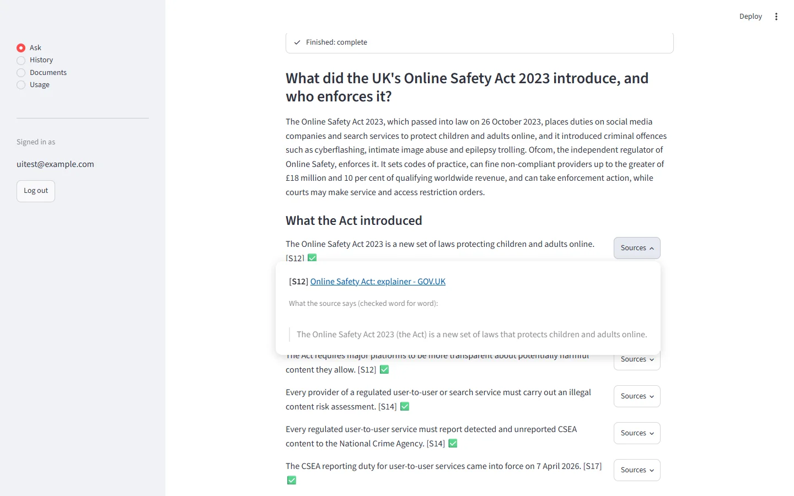
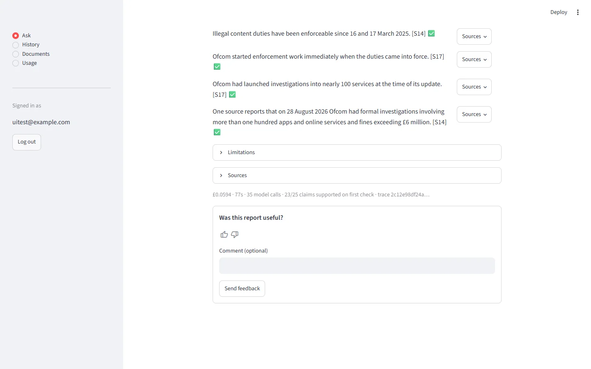
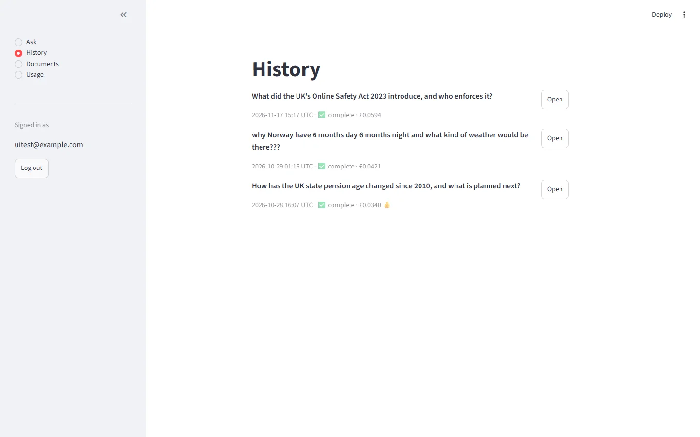
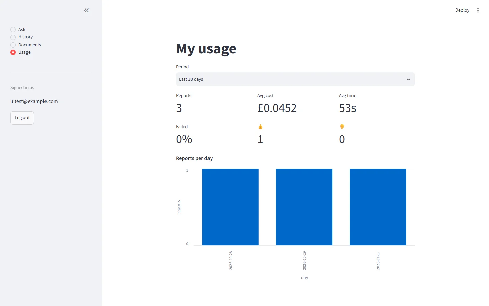

What it does
01You ask a question. Scout splits it into sub-questions, researches them in parallel on the web and in your uploaded PDFs, writes a short report, and fact-checks every sentence. Each claim carries a verdict badge and a Sources button showing the exact passage that supports it. When the evidence is not there, Scout says so instead of guessing.
Scout in use
02



How a report is made
03Splits the question into sub-questions.
Each sub-question is researched at the same time, through Scout's own MCP tool server.
Takes source-tagged notes. Web pages are treated as data, never instructions.
May only use the notes, so every sentence traces back to a source.
Must quote the exact source sentence it relied on. Code then confirms the quote really appears in the source.
One bounded retry round for claims that failed verification.
Key decisions
04- Citations checked by code, not by the model. A model cannot simply claim support: the quote has to exist in the source text.
- Cost-aware model split. Claude Sonnet plans, writes and revises; the cheaper Claude Haiku does the many reading and checking calls.
- Hybrid document search. Local embeddings plus PostgreSQL full-text search, merged with reciprocal rank fusion and reranked by a cross-encoder. Private files never leave the server for indexing.
- Hard budgets. Every report is capped at £0.20, 50 model calls and 180 seconds, and returns a partial report with the reason if a limit is hit.
- Safety by design. Injection scanning, hidden-text stripping, a link allowlist and SSRF protection, with personal data redacted from logs and traces.
- A full product. REST API with login, background jobs on Redis, live progress streamed to the browser, report history, feedback and a usage dashboard.
Results
05Measured on a 50-question golden set.
| Measure | Result |
|---|---|
| Questions about uploaded documents answered correctly | 12 / 12 |
| Unanswerable questions handled honestly | 8 / 8 |
| Correct choice of tools | 50 / 50 |
| Overall task success (strict: every key point needed) | 68% at baseline |
| Cost and time per report | £0.024, 30 s median |
| Hardest questions after the Dyno-found fix (3 attempts each) | 47% → 80% |
| Cost per report when routed through Gearbox (first 3-question comparison) | −50%, 34% faster |
| Live red-team: planted instructions the real model obeyed | 0 of 4 (all flagged) |
What didn't work at first
06Strict task success started at 68%. Dyno's failure clustering showed why: reports were stopping at "the sources don't say" instead of searching further. Fixing that lifted success on the hardest questions from 47% to 80%, and no case got worse.